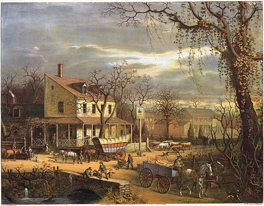

Chromolithography is a unique method for making multi-colour prints. This type of colour printing stemmed from the process of lithography, and includes all types of lithography that are printed in color. When chromolithography is used to reproduce photographs, the term photochrome is frequently used. Lithographers sought to find a way to print on flat surfaces with the use of chemicals instead of raised relief or recessed intaglio techniques.
Chromolithography became the most successful of several methods of colour printing developed by the 19th century; other methods were developed by printers such as Jacob Christoph Le Blon, George Baxter and Edmund Evans, and mostly relied on using several woodblocks with the colors. Hand-coloring also remained important; elements of the official British Ordnance Survey maps were colored by hand by boys until 1875. The initial technique involved the use of multiple lithographic stones, one for each color, and was still extremely expensive when done for the best quality results. Depending on the number of colours present, a chromolithograph could take even very skilled workers months to produce. However much cheaper prints could be produced by simplifying both the number of colors used, and the refinement of the detail in the image. Cheaper images, like advertisements, relied heavily on an initial black print (not always a lithograph), on which colors were then overprinted. To make an expensive reproduction print as what was once referred to as a "chromo", a lithographer, with a finished painting in front of him, gradually created and corrected the many stones using proofs to look as much as possible like the painting, sometimes using dozens of layers.
Chromolithography is a chemical process. The process is based on the rejection of grease by water. The image is applied to stone, grained zinc or aluminium surfaces, with a grease-based crayon or ink. Limestone and zinc are two commonly used materials in the production of chromolithographs, as aluminium unfortunately corrodes easily. After the image is drawn onto one of these surfaces, the image is gummed-up with a gum arabic solution and weak nitric acid to desensitize the surface. Before printing, the image is proved before finally inking up the image with oil based transfer or printing ink. The inked image under pressure is transposed onto a sheet of paper using a flat-bed press. This describes the direct form of printing. The offset indirect method uses a rubber-covered cylinder that transfers the image from printing surface to the paper. Colors may be overprinted by using additional stones or plates to achieve a closer reproduction of the original. Accurate registration for multi-colored work is achieved by the use of a key outline image and registration bars which are applied to each stone or plate before drawing the solid or tone image. Ben-Day medium uses a raised gelatin stipple image to give tone gradation. An air-brush sprays ink to give soft edges. These are just two methods used to achieve gradations of tone. The use of twelve overprinted colours would not be considered unusual. Each sheet of paper will therefore pass through the printing press as many times as there are colours in the final print. In order that each colour is placed in the right position, each stone or plate must be precisely 'registered,' or lined up, on the paper using a system of register marks.
Chromolithographs are considered to be reproductions that are smaller than double demi, and are of finer quality than lithographic drawings which are concerned with large posters. Autolithographs are prints where the artist draws and perhaps prints his or her own limited number of reproductions. This is the true lithographic art form.
